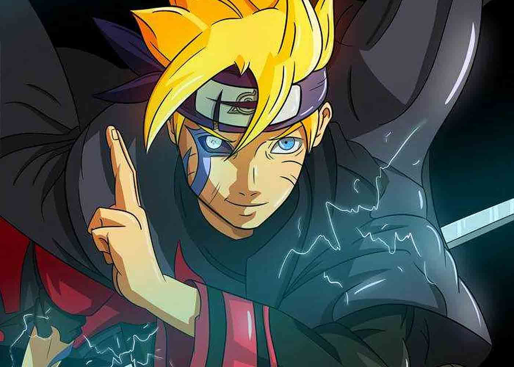
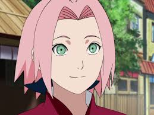
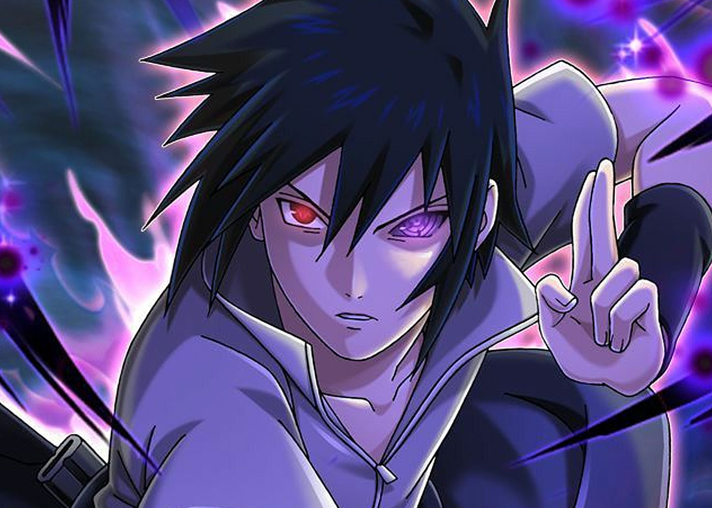

Naruto
Naruto Uzumaki, seorang ninja yang hiperaktif, periang, dan ambisius yang ingin mewujud kan keinginannya untuk mendapatkan gelar Hokage.

Boruto
Boruto adalah seorang anak yang bersekolah di akademi ninja Konoha, mewarisi rambut pendek berwarna pirang dan mata biru dari keluarga ayahnya

Sakura
Sakura adalah anak kesayangan guru-gurunya karena memiliki otak yang encer dan kemampuan mengendalikan cakra dengan sempurna.

Sasuke
Sasuke adalah seorang ninja jenius dari sebuah klan terkemuka di Konoha, Klan Uchiha,dan juga sahabat dari pemeran utama yaitu naruto